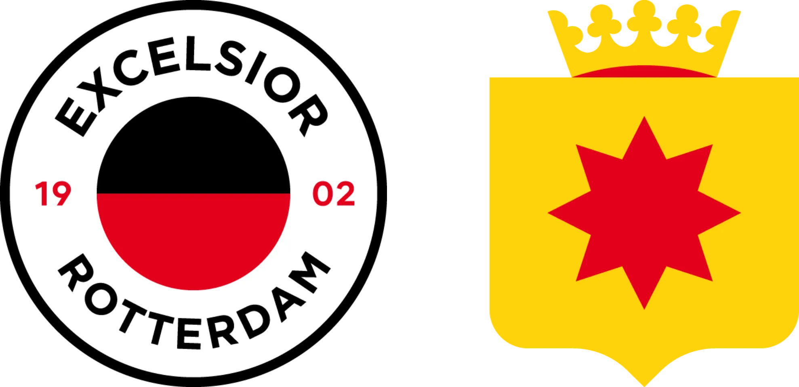

Excelsior is de kleinste club van de 3. Excelsior is opgerricht door een groepje vrienden die altijd samen voetbalden op de kralingse buitenplaats: 'Woudenstein'
Excelsior is was op meerdere fronten een pionier in het Nederlands voetbal zo waren zij de eerste cub die een betaalde voetbalcompetitie realiseerde. Ook waren ze de eerste club met een overdekte staantribune en waren ze de eerste club met een sponsor op het shirt
